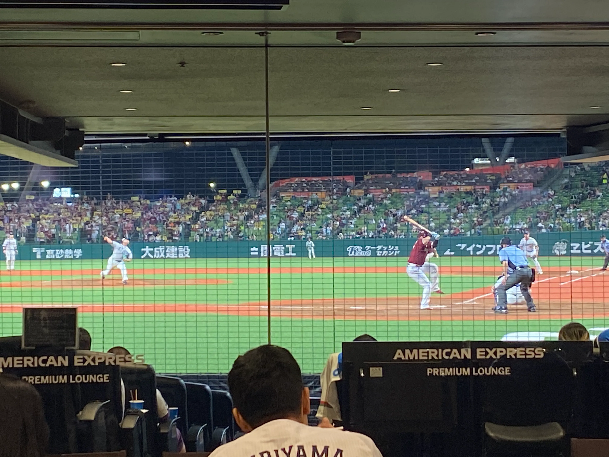
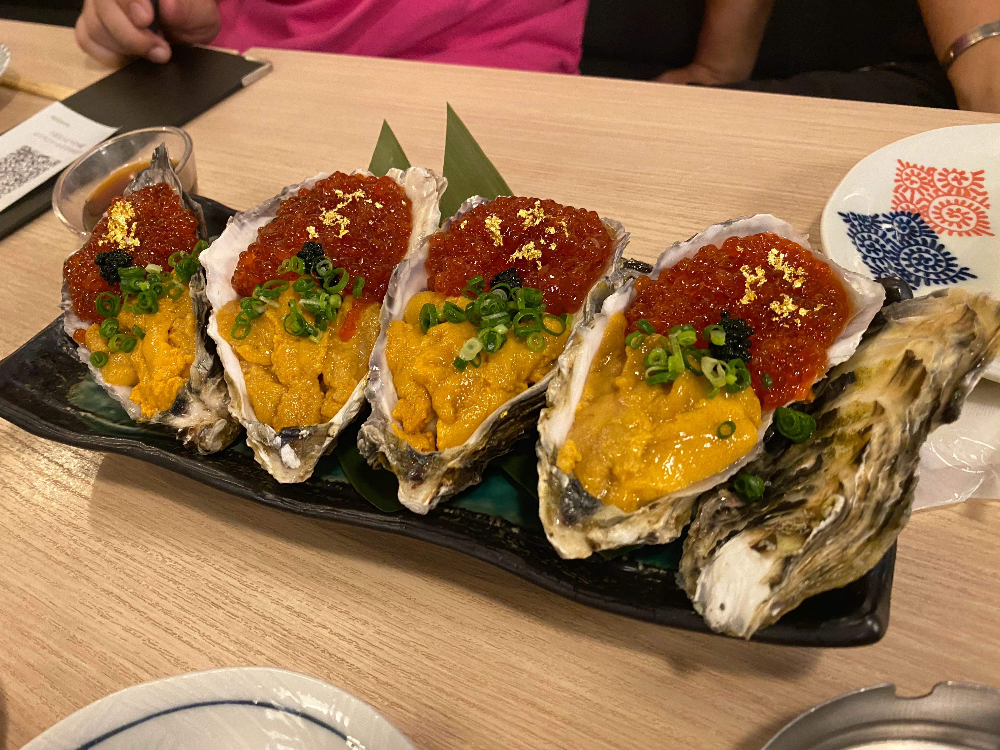
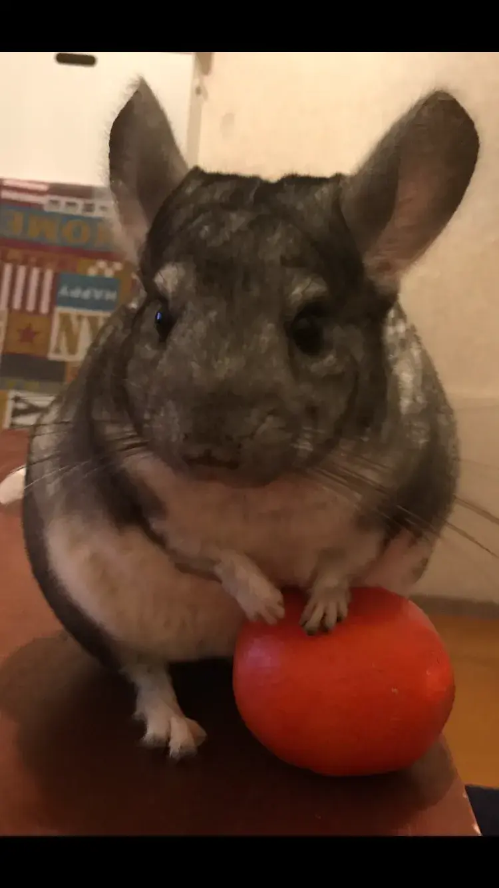
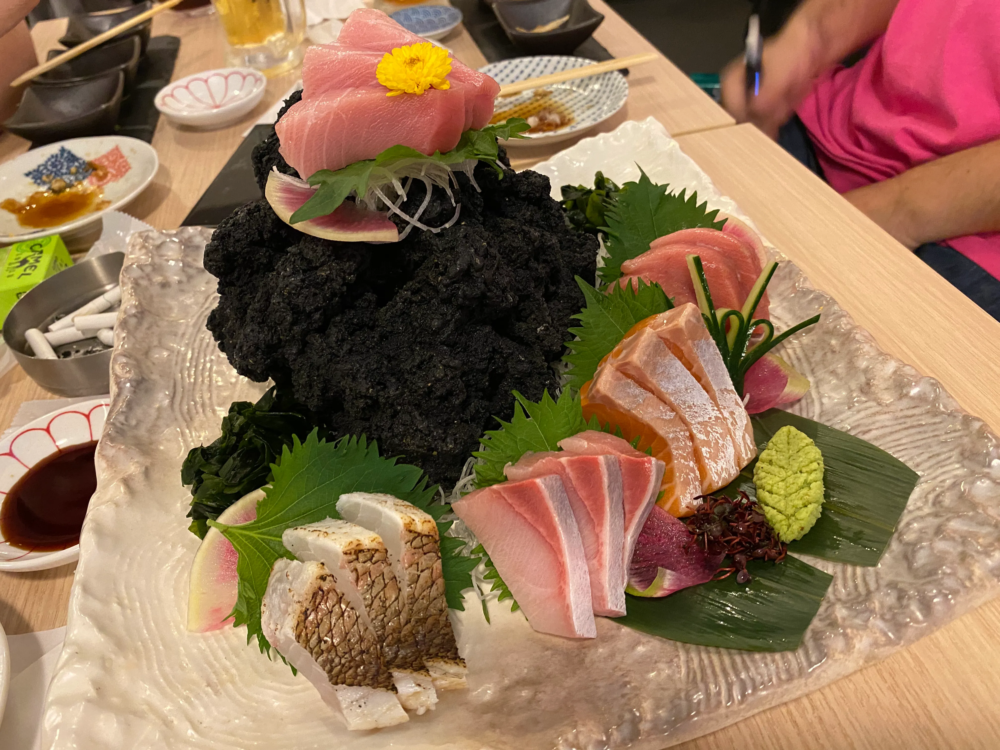
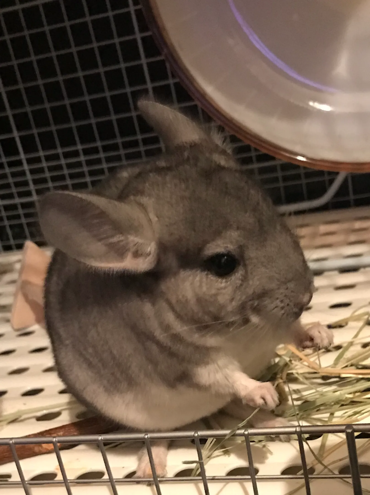
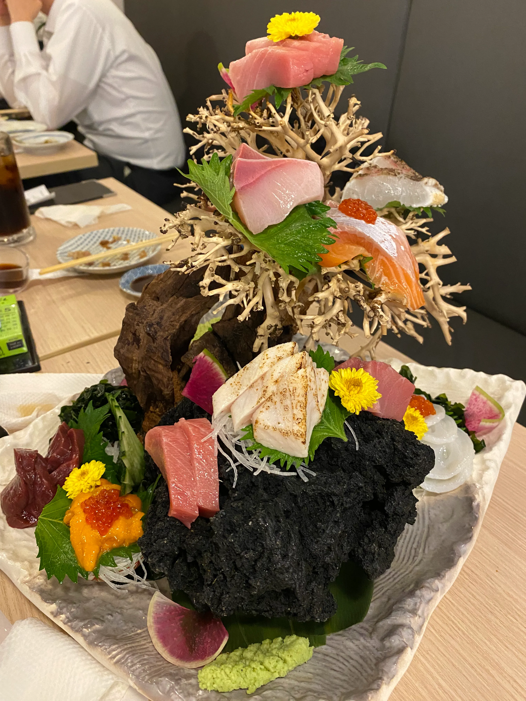
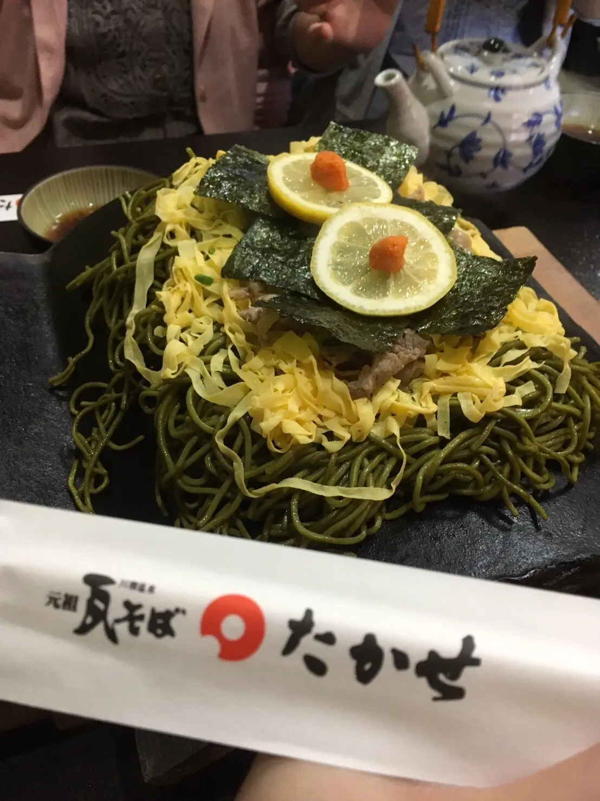
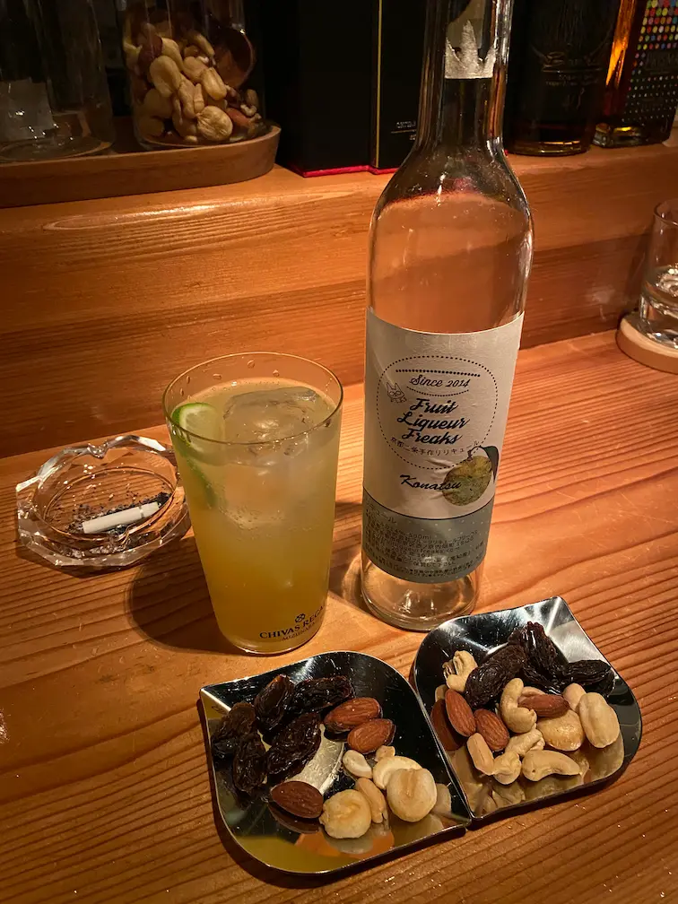

沖縄で、ウミガメと泳いだ。
国内旅行では沖縄が一番のお気に入りです。透明度の高い海でウミガメと一緒に泳いだ経験は、今でも忘れられません。
※写真・エピソードは後日追記予定
ドラムも、ギターも、ベースも。
音楽サークルに所属し、グループでの演奏活動をしています。ボーカル以外の楽器なら一通り担当できるのが自分の強みです。
きっかけをくれた、同郷の恩人
サークルを主催しているのは、実は同郷出身の方。私にギターを教えてくれたのもこの人で、音楽やバンドを好きになったきっかけをくれた恩人でもあります。主催者はメンタルヘルスの心理学を学んだ経歴を持ち、音楽と心理学、両方の視点から得るものがあるレッスンをしています。技術を極める本格的なレッスンというよりも、グループでの活動を中心にしたスタイルです。
足りないところを、俯瞰して補う。
グループの中でベース・ドラム・ギターのうち、必要な役割を柔軟に担当する。目立つポジションより、全体を見て支える「縁の下の力持ち」のポジションが、自分には性に合っています。サークル活動を通じて身についた"スモールステップ"の意識は、今も仕事への向き合い方に息づいています。
現在は育児のため活動を休止中ですが、いつでも戻れる大切な場所です。
まもなく、パパ2年生。
2歳になる娘のパパとして、育児に奮闘中です。日々学びながら、少しずつ"パパ2年生"に近づいています。音楽サークルは今お休み中ですが、その分の時間は家族との時間に。
※写真・エピソードは後日追記予定
チンチラの「ねねちゃん」
自宅ではチンチラを飼っています。名前は「ねねちゃん」。もふもふとした毛並みと、跳躍力の高さが魅力です。
※写真・エピソードは後日追記予定
Others
横にスクロールできます
-

西武ライオンズ観戦
-

お酒
-

愛チンチラ
-

お酒
-

愛チンチラ
-

お酒
-
厳島神社の旅行写真
-
音楽活動
-

たかせの瓦そば
-

至福の一杯
お仕事の話も、雑談も、お気軽に。
Contact へ →